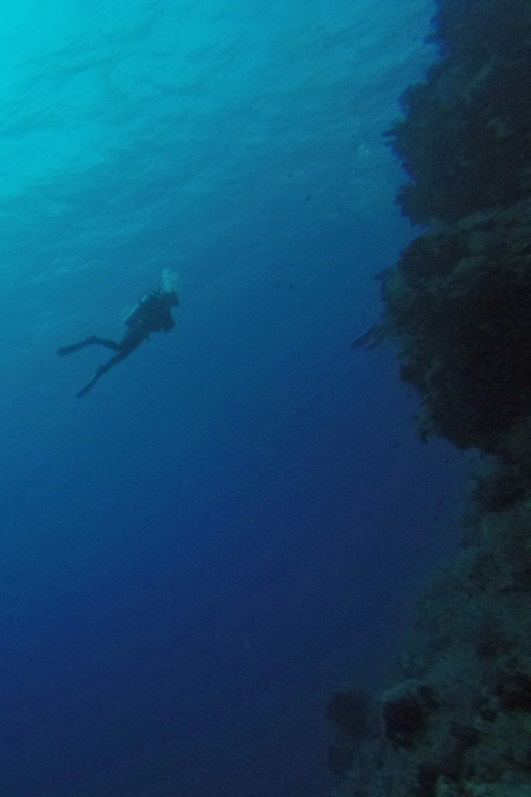

Southern Red Sea in September 2017
Four club members made a relatively late booking to dive some of the sites in the southern Red Sea in September. The itinerary and the port of departure seemed to change on daily basis, even up to the point of arrival, apparently due to exercises being conducted by the Egyptian coastguard. However after a long flight and an even longer transfer we finally reached our boat at Hamata late at night and once the boat departed the tiring journey was soon forgotten.
We headed south, diving on sites at Fury Shoals and then St Johns. Most days we did three dives, one day we managed four and they were all excellent dives. We would usually be awoken early for a dive before breakfast and then do another before lunch. And so on... lots of diving, lots of eating, lots of relaxing. It's hard to pick out a favourite dive as there were so many great ones, but I really liked diving at Abu Galawa Soraya which had a central lagoon surrounded by beautiful coral gardens - a very tranquil and relaxing dive. There was lots of sealife to be seen, including many things I hadn't encountered before. Barracudas, stone fish, crocodile fish, trigger fish, moray eels swimming out in the open, octopus, dolphins and a couple of bonkers porcupine fish were some of the highlights. After a couple of days at St Johns we headed back north, diving at Fury Shoals again, Elphinstone reef and Marsa Shouna.

The boat itself, the Okeanos Xplorer was nice and comfortable and the dive guides and crew were very friendly and helpful and made getting ready for the dives and getting out of the water very easy. Food and drink on board was excellent and there was plenty for vegetarians - so no danger of losing weight on this trip. We returned to a different port, Port Ghalib so our return journey to Hurghada wasn't so tiring. After 20 years of diving this was my first proper liveaboard experience and I'd been promised great things. I can say that I wasn't disappointed, I had a great week and would certainly recommend it to anyone.
by Chris